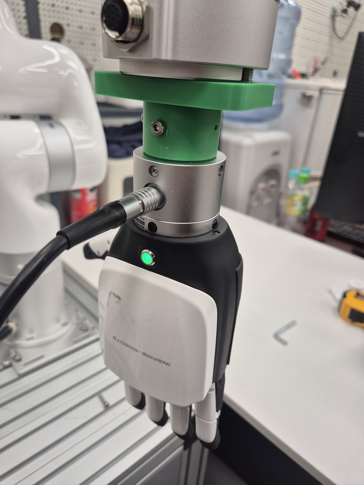
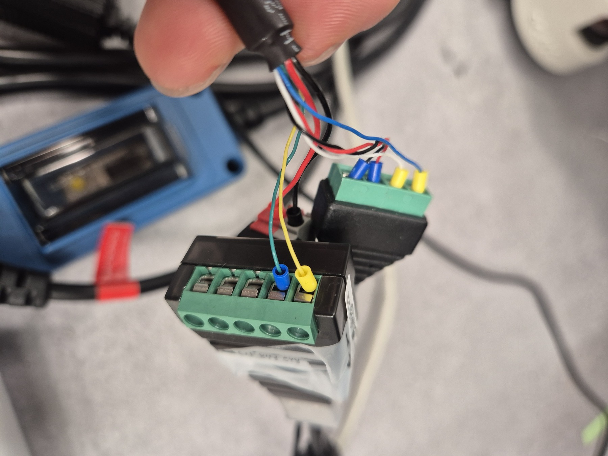
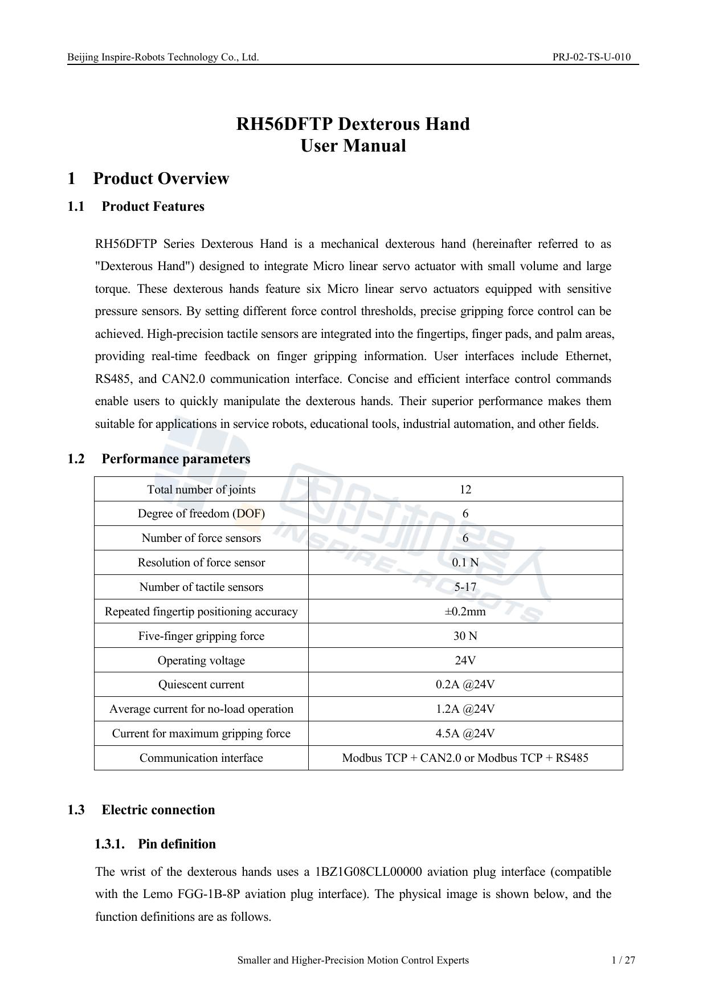
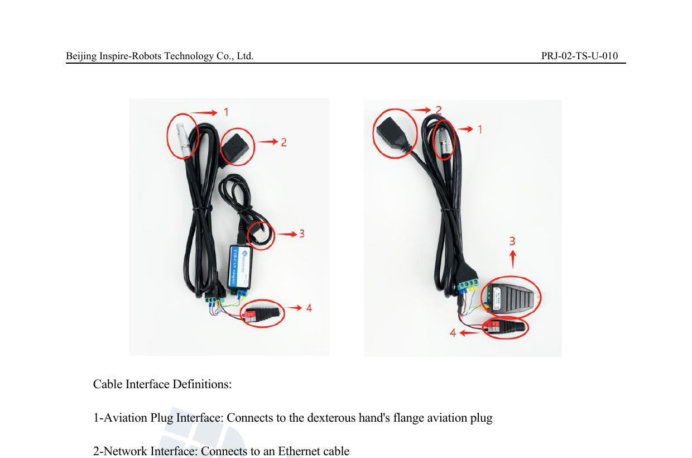
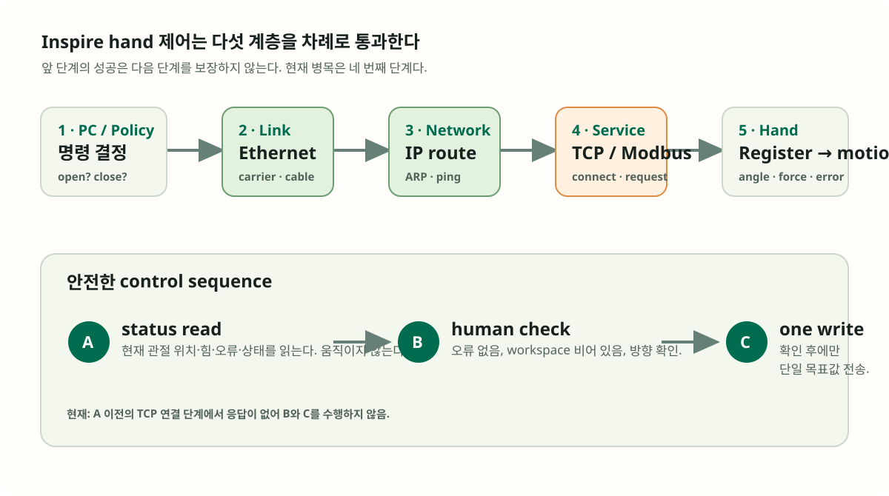

Inspire left hand는 보이지만, 아직 제어할 수는 없다.
hand를 별도 Ethernet 링크에 연결한 뒤 physical link, ARP, ICMP까지는 확인했다. 그러나 실제 관절을 읽고 움직이게 하는 Modbus TCP 서비스에는 아직 연결되지 않았다. 이 기록은 ping 성공과 제어 가능 사이에 무엇이 더 필요한지 설명한다.


공식 문서로 보는 장치와 cable interface
현장 사진만으로는 adapter의 역할을 파악하기 어려울 수 있어, 아래에는 Inspire의 공식 RH56 user manual 발췌를 함께 둔다. 왼쪽은 여섯 DOF와 Modbus TCP 통신을 명시한 제품 개요이고, 오른쪽은 hand–Ethernet–전원–CAN/RS485 interface의 물리적인 연결을 보여 준다.


한 장으로 보는 제어 경로
로봇 hand 제어는 한 번의 연결이 아니라, 아래 다섯 계층을 차례로 통과하는 과정이다. 현재는 2·3단계는 통과했고 4단계에서 멈췄다.

용어를 먼저 정리하면
NIC는 PC의 유선 네트워크 포트다. carrier가 있다는 것은 케이블 반대편 장치의 전기적 신호를 감지했다는 뜻이다. 전화선이 꽂혀 있는지 확인하는 수준이다.
IP는 네트워크 주소, subnet은 직접 대화할 수 있는 주소 범위다. route는 PC가 패킷을 어느 NIC로 보낼지 고르는 규칙이다. NIC와 Wi‑Fi가 여러 개면 잘못된 길을 택할 수 있다.
ARP는 같은 Ethernet 링크에서 상대 IP의 하드웨어 주소를 찾는다. ping은 상대가 네트워크에 응답하는지를 묻는다. 둘은 장치의 기본 도달성만 확인한다.
TCP는 신뢰성 있는 연결을 만드는 방식이고, port는 장치 안에서 어떤 프로그램과 대화할지 고르는 번호다. controller가 해당 service를 열고 있어야 연결이 성립한다.
산업 장비의 값을 읽고 쓰는 application protocol이다. Ethernet/IP/TCP 위에 올라가며 client가 요청하고 device가 응답한다. 공식 표준은 이를 client/server request-reply 방식으로 정의한다.
controller 내부의 번호 붙은 작은 값 저장소다. 현재 관절 angle·force·error를 읽고, target angle·speed·force를 써서 hand에 요청한다.
왜 ping이 되는데 제어가 안 될까?
ping은 “이 장치가 네트워크에 살아 있나요?”라는 간단한 질문이다. 반면 제어 프로그램은 “지정된 TCP service에 연결한 뒤, 올바른 Modbus request를 보내고, controller가 이해할 수 있는 register를 읽거나 써도 되나요?”를 확인한다. 전자는 성공해도 후자는 실패할 수 있다.
| 검사 | 이번 관측 | 무엇을 의미하나 |
|---|---|---|
| physical link | hand용 NIC에서 carrier와 link가 감지됐다. | 케이블이 빠졌거나 NIC가 내려간 문제는 아니다. |
| ARP · ICMP | hand controller로부터 응답을 받았다. | 전원·기본 주소 도달성은 확보됐다. |
| 기본 route | OS가 hand 전용 NIC가 아닌 Wi‑Fi를 먼저 선택했다. | 초기 요청이 의도하지 않은 네트워크로 갈 수 있었다. |
| 전용 NIC 지정 | 로컬 source address를 명시한 뒤에도 TCP 연결은 timeout됐다. | route 문제는 분리됐고, 남은 병목은 controller service다. |
| Modbus status read | 관절 위치를 읽기 전에 TCP session이 성립하지 않았다. | motion은 보류한다. service·port·device mode를 확인해야 한다. |
Inspire hand는 어떤 방식으로 움직이나
ParaDex의 reference controller는 Modbus TCP를 통해 여섯 관절의 값을 다룬다. read는 현재 angle, force, error, status를 가져오고, write는 목표 angle과 설정값을 보낸다. 이때 hand controller가 목표값을 받아 실제 모터를 움직인다.
중요한 점은 low-level hand command와 grasp policy가 다르다는 것이다. low-level command는 “여섯 관절을 이 목표값으로 보내라”이고, policy는 카메라와 task 상태를 보고 “언제 열고, 언제 닫고, 실패하면 어떻게 다시 시도할지”를 결정한다. BeltBench M0에서는 이 둘을 분리해 기록해야 공정한 비교가 가능하다.
안전한 제어 순서
- status read: 먼저 actual angle·force·error·status를 읽는다. 이 단계는 움직이지 않는다.
- human check: 오류 상태가 없는지, 손 주변과 basket이 안전한지, 목표 방향이 맞는지 사람이 확인한다.
- one explicit write: 확인 뒤에만 single open 또는 task action을 한 번 전송한다.
- evidence 기록: 명령 전후 상태와 영상·trial log를 남겨, 나중에 성공·실패를 재검토할 수 있게 한다.
BeltBench에 통합한 구현
private BeltBench에는 표준 library 기반의 작은 InspireModbusHand adapter를 추가했다. 기존 ParaDex controller처럼 생성과 동시에 기본 목표값을 쓰거나 background loop를 시작하지 않는다. 대신 status는 읽기만 하고, open은 workspace 확인을 뜻하는 명시적 confirmation 없이는 실행되지 않는다.
이 adapter는 ParaDex를 복제하기 위한 것이 아니다. M0 benchmark에 필요한 공통 계약—관측, 상태 확인, 단일 action, evidence—만 남긴 얇은 hardware adapter다. endpoint와 NIC 주소는 local configuration으로만 전달하며 repository와 public devlog에는 저장하지 않는다.
다음 해결 순서
- controller가 부팅 완료·원격 제어 가능 상태인지 hand UI 또는 vendor tool에서 확인한다.
- 현재 firmware가 제공하는 Modbus TCP service와 port를 user manual 기준으로 확인한다.
- 전용 NIC를 명시한 상태로
statusread가 성공하는지 검증한다. - error·status가 정상이고 workspace가 비어 있을 때에만 단일
open을 실행한다. - 그 뒤에만 xArm–hand joint control과 M0 pick-place sequence로 확장한다.
참고 자료
- INSPIRE RH56 Dexterous Hand User Manual — hand의 Modbus TCP frame과 기능 코드를 확인할 때 쓴 vendor manual.
- Modbus Organization: Introduction to Modbus — Modbus가 Ethernet/TCP 위에서 동작하는 application protocol이라는 설명.
- Modbus specifications — protocol과 TCP implementation guide의 공식 목록.
관련 이슈
ISSUE-001은 xArm에서 physical link와 host routing을 분리해 해결한 사례다. hand에서도 route 문제를 같은 방식으로 분리했고, 현재 남은 병목은 controller service다. 이 문제가 해결돼야 M0 table-top trial에서 arm과 hand를 함께 평가할 수 있다.